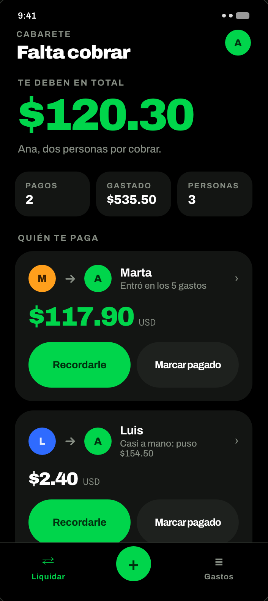

¿Te la perdiste, o llegaste tarde?
Aquí está la grabación completa, y los slides que usamos esta noche.
Todo lo que no cambia de un día a otro está en el kit: cómo instalar tu agent, el glosario, el camino sin terminal y los archivos que te llevas.
Cerrar en Verde: el prototipo que salió de la sesión, siete pantallas de una app para cuadrar los gastos de un viaje - el mismo problema que resuelve el proyecto de práctica, pero con cara de app.
Esta es la pantalla que abre la app. No una lista de gastos: la deuda. Quién te paga, cuánto, y los dos botones que sirven - recordarle o marcarlo pagado.
El número de arriba sale de cinco gastos en dos monedas, repartidos entre tres personas, y el reparto busca el mínimo de transferencias: entre 3 nunca hacen falta más de 2.
En tres noches: el lunes pusiste un agent a correr, el martes le diste context, y el miércoles revisaste lo que te devolvió hasta que quedó algo que firmarías.

Entrar, viaje, gente
Signup social, el nombre del viaje con su moneda base, y quién viene - sin obligar a nadie a registrarse para entrar en el reparto.
Quién le paga a quién
No abre en una lista de gastos, abre en la deuda. Con el mínimo de transferencias: entre 3 personas nunca hacen falta más de 2.
De dónde sale ese número
Cada deuda se abre gasto por gasto. Puedes auditar la cifra sin creerle a la app, que es exactamente lo que hicimos con el diff.
Se ve terminado. No es lo mismo que estar terminado.
El agent cierra su loop cuando se le acaban las cosas que hacer, no cuando el cambio está bien. Sale igual de seguro las dos veces, y esa seguridad es justo lo que se cuela en una revisión rápida.
Revisar código de un agent no es como revisar el de un compañero. Con un compañero asumes intención: si hizo algo raro, por algo fue. Esa suposición aquí te sale cara.
Cinco cosas, y las cinco aparecen.
Afirmó algo que el repo no dice
Una función que no existe, un flag que nadie usa, una convención que se sacó de otro proyecto.
Pasan, pero no prueban
Verde no es lo mismo que cubierto. Mira qué caso prueba cada test, no cuántos hay.
Cambió lo que nadie pidió
Empieza por git diff --stat: un archivo que no esperabas ver es la alarma más barata que existe.
Borró algo y no lo dijo
Lo que quitó no aparece en su resumen. Solo aparece en el diff.
Funciona, pero no lo mantienes
La que todo el mundo se perdona. No te la perdones: es la que te cuesta en tres meses.
Cuatro preguntas, siempre en este orden.
De lo más barato a lo más caro. Si falla la 1, no gastes tiempo en la 4.
- ¿Corre? Lo más fácil de todo, y aun así el paso que se salta.
- ¿Hace lo que pediste? Ni más ni menos.
- ¿Rompió otra cosa? Pregúntale por los casos, no le aceptes un "no se rompe nada".
- ¿Lo entiendes y lo mantienes? Aquí se cae casi todo el mundo, y es la que importa en tres meses.
Cuatro movidas, de suave a fuerte.
¿De dónde sacaste esto?
"Cita archivo y línea." La mitad de las invenciones se caen aquí solas.
Escribe un test que falle
Si no puede, o el código está bien o el test no sirve. Las dos respuestas te dicen algo.
Deshaz todo menos X
Contra el que cambió de más. Más rápido que discutirle cada archivo.
git checkout .
Cuando el enfoque está mal desde la raíz. No lo negocies parche por parche.
Tres prompts: revisar, empujar, cerrar.
Se corren sobre tu diff feo, el que trajiste sin arreglar. Uno hace visible lo que no te dijo, otro empuja una sola cosa, y el último decide si lo firmas.
Revisa el diff que acabas de escribir como si fueras un reviewer hostil
que no confía en ti.
Para cada afirmación que hagas, cítame el archivo y la línea que la
respalde. Lístame aparte:
1. Lo que no puedas respaldar con una cita.
2. Lo que asumiste al hacer esto y yo no te dije explícitamente.
3. Lo que borraste o cambiaste sin que te lo pidiera.
No arregles nada todavía.[pega aquí la línea o el bloque que te pareció mal]
¿De dónde sacaste esto? Cítame el archivo y la línea.
Si no lo puedes respaldar, dilo con esas palabras y no lo defiendas.Antes de que yo firme esto, contéstame en este orden y por separado:
1. ¿Corre? Dime con qué comando lo comprobaste.
2. ¿Hace lo que te pedí, ni más ni menos?
3. ¿Qué se rompe con este cambio? Dime los casos concretos, no me
digas que no se rompe nada.
4. ¿Qué parte de esto no podría mantener yo sin ti, y por qué?Trae algo que hiciste dos veces.
Mañana cerramos: ya sabes pedirlo, darle context y revisarlo. Falta que no se te olvide entre un proyecto y otro.
- Revisa un diff más con las cuatro preguntas, en orden.
- Fíjate en qué le repetiste hoy que ya le habías dicho ayer.
- Trae eso. Lo que repites es lo que mañana se vuelve workflow.